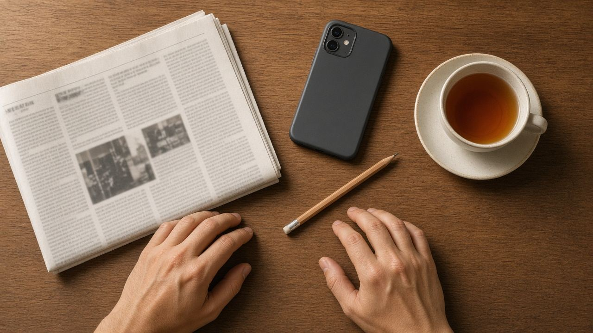
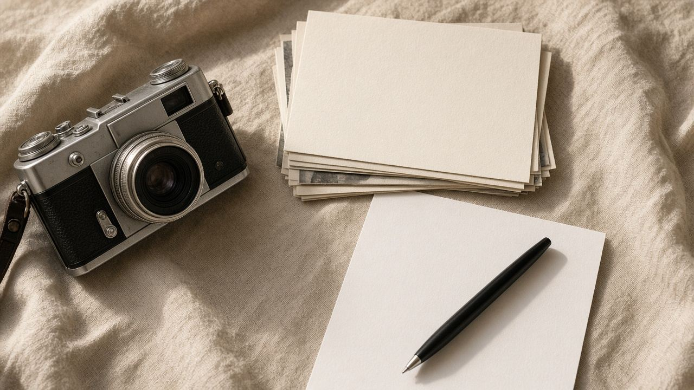

معرفة عامة
معلومات عامة
القسم ده للمعلومة اللي بتنفع قبل أي أداة: إزاي تقرأ خبر، وإزاي تستخدم صورة من غير ما تاخد حق غيرها، وإزاي تحفظ ملفاتك. الصفحات دي مكتوبة عشان تتقرأ، وممكن تستخدمها صفحة وصول لإعلان بيتكلم عن نفس الموضوع.

تحققإزاي تتأكد من خبر قبل ما تشاركه
أربع خطوات عملية، من طريقة مايك كولفيلد، عشان تفرّق بين الصفحة الأصلية ولقطة الشاشة.

حقوقحقوق الصور: ملكية عامة، ورخصة مفتوحة، واستخدام تجاري
الفرق بين الملكية العامة ورخص المشاع الإبداعي، وليه رخصة الاستخدام غير التجاري ما تنفعش مع إعلان.
 ملفات
ملفاتأسماء الملفات والنسخ: قاعدة 3-2-1 من غير تعقيد
تسمية واضحة، وثلاث نسخ، ووسيطين، ونسخة برّه الجهاز. قاعدة حفظ معروفة ومش مرتبطة بمنتج.
قراءةإزاي تقرأ بيان معرض أو بيان صحفي
البيان بيقول رواية الجهة عن نفسها. الصفحة دي بتعلّم تفكيكه قبل ما يتحول لخبر.
مصادرالمصدر الأولي والمصدر اللي ناقل عنه
الفرق بين صفحة المتحف، ووكالة الأنباء، ودليل المعارض، والمقال اللي بيعيد الصياغة.